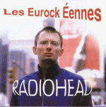

Les Eurockéennes
CDX 1596403 MPH
Tracks 1-12 from Les Eurockéennes, Belfort, France, 4/Jul/97
<1> Lucky
<2> Bones
<3> Airbag
<4> My Iron Lung
<5> Exit Music [For a Film]
<6> The Bends
<7> No Surprises
<8> Talk Show Host (listed as "Talkshow Hosts")
<9> Paranoid Android
<10> Street Spirit [Fade Out]
<11> Creep
<12> Just
Tracks 13-15 recorded for Evening Session, BBC Radio One 28/May/97
<13> Exit Music [For a Film]
<14> Paranoid Android
<15> Climbing up the Walls
Type of recording : Radio Broadcast
Quality : Excellent
Notes : Tracks 13-15 listed as "studio outtakes", but are
really Evening Session tracks.
Rating : ****